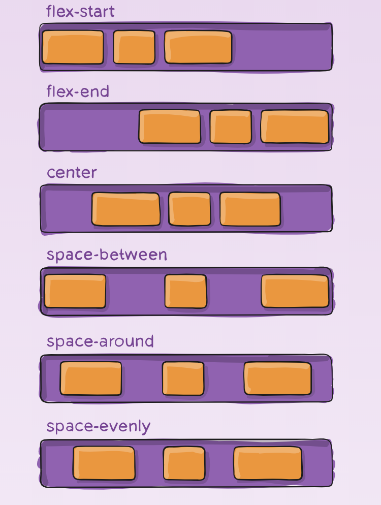
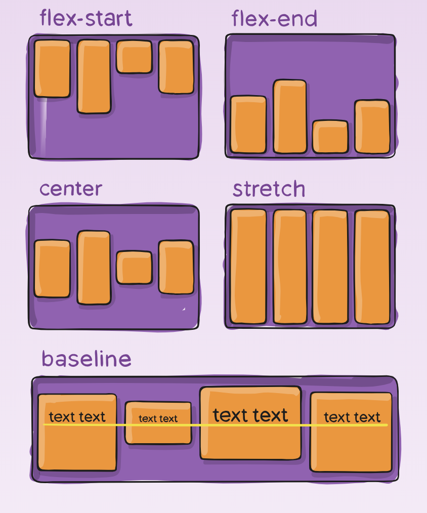
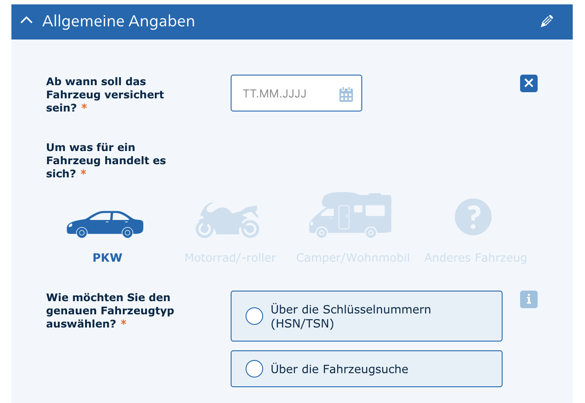
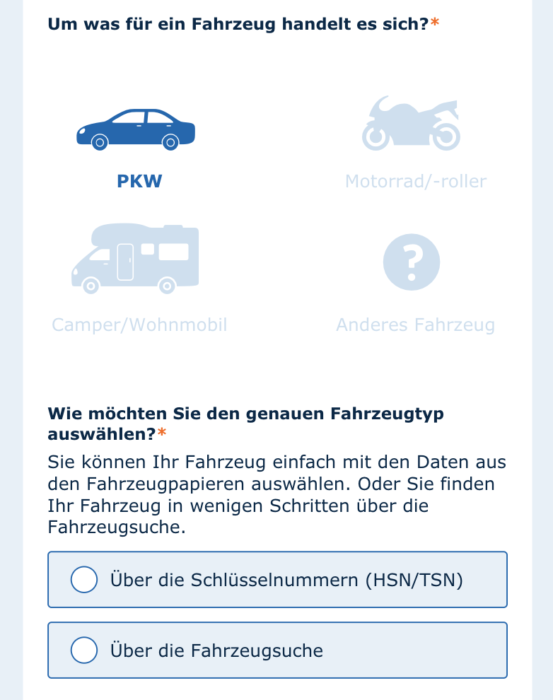

CSS Layouting mit Flexbox
Agenda
Motivation
Kurze Einführung
Flexbox Froggy
Warum brauchen wir Flexbox Know How?
Reviews
Technische Schulden abbauen
Bugfixing
Kurze Einführung
Wofür Flexbox?
Elemente verteilen

Elemente ausrichten

Responsivität (1/2)

Responsivität (2/2)

Flexbox Froggy
Nützliche Links
Flexbox Froggy
Complete Guide to Flexbox:
Detaillierte Doku
Flexbox Playground:
Visuell Properties ausprobieren
Flexbugs:
Flexbox issues mit Workarounds